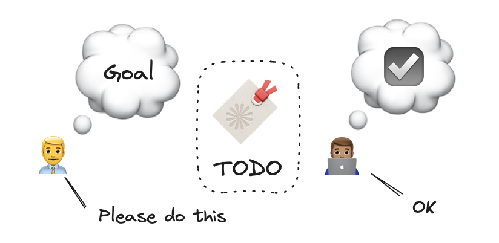
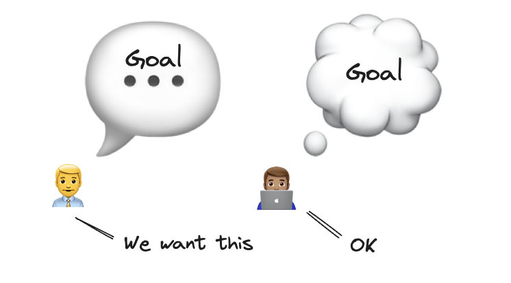

Goal Transmission
| What if there was a way to feel awesome about what we can accomplish at work? |
A product organization exists to allow workers like myself to achieve big things that we cannot as individuals. We rally around a vision to work together. As we build the product, we face an combinatorially large number of ways to turn the vision into smaller increments(See Granularity Gradient). But to realize the vision, we need to choose a sequence of goals and actions. We call this planning. Intuitively, goals become actionable as they divide into tasks that each individual can handle. Naively, we put those tasks on a list and ask others to get it done. We call this Project Management.
But what is it about checking off tasks from a list that makes us feel like cogs in a machine? More precisely, why doesn’t it jive with our neurochemistry? Where is the meaning in checkboxes? What’s the point in doing more than the bare minimum? I don’t find motivation in getting paid a bit more or not getting fired. I find meaning in the big picture, yet I’m not enjoying moving a ticket to the ‘Done’ column. Is there a way to make development work fun and intrinsically rewarding?
When a goal is assigned as tasks, it loses its relation to the shared vision; but hooking into our dopamine system requires visualizing the outcomes our effort (learn more with Andrew Huberman). Therefore, transmit the goals in its vision to developers who expend the effort.
Task Assignment
Would you rather receive a TODO ticket in JIRA or be shown the goal for a critical mission?
Watch: Office Space TPS Reports on YouTube
Watch: Mission Impossible Briefing on YouTube
I’m not pretending that development work is anything like a spy action movie. But if I’m spending half my time awake building a product, I’m going to care about making it better. I want to be excited about it. Even if I was the one assigning the work, I want the person doing the work to get excited, too.
Project managers (or whoever assigns the work) are goal-driven. But when the goals in mind are expressed as tasks, they lose their soul and flatten into a binary state of doneness to the assignee. In other words, tasks are a lossy format.

We use this kind of language in everyday life. For example, if I wanted someone to pay attention, I would ask them to take a seat and get comfortable. Our intentions hide behind words, often ambiguously. The level of complexity is shallow enough that a bit of guesswork is acceptable.
But in a work setting, a misinterpretation of the intentions behind a task can matter a lot. For example, adding a buy button to a product page – are we adding this button so that actual transactions can be facilitated? Or is it enough to validate the hypothesis that users would be interested at all in buying it? Both are valid, but involve completely different implementation details.
When we receive a task, its completion becomes the goal. The best way to achieve this goal is how fast it can get done, even at the expense of its quality. Additional quality gates only act as hurdles that get in the way of speed.
Goal Assignment

A goal is a description of an alternate state of the world that we desire. Goals are powerful motivators because it’s how our brains work. It orients our bodies to keep us alive. It feels good to achieve goals because dopamine is released during effort and completion. We are disappointed when we fail to achieve our goals because dopamine is reduced. When it hurts, we learn and grow. The more obvious and visible the goal is, the stronger our dopamine response will be. It irresponsible to ask someone to perform a task without also sharing what goal it will achieve. Compliance to a mandate is not a goal.
For example, I used to mandate a rule for my 3-year-old toddler that brushing her teeth is required prior to bedtime. I used to try to verbalize the reasons why she needed to brush her teeth, but compliance was a coinflip, all else held constant. After one instance of traumatic toothbrushing coersion experience, I repented on my ways. Why is it that I need to force her to do something that’s good for her?

After learning about motivation from Andrew Huberman’s podcast, I put up this poster beside the sink for the toddler to visualize the consequences of brushing her teeth. Since, she is more likely to brush her teeth. She still requires me to prompt her, however.
In the work context, describing goals is more difficult than describing tasks. We are not vulcans, and we can’t mind meld.
| “My mind to your mind, my thoughts to your thoughts.” |
| In Star Trek, Mind meld is a technique for sharing thoughts, experiences, memories, and knowledge with another individual. |
But we can get close. Through dialogue, we can create expectations about users’ needs being met; or support engineers being more capable; or making sales becoming frictionless. Pictures and emojis can anchor the visual aspect of the goal, and words in tracking software can serve as references to the goal. But a PRD or a ticket can never encapsulate the essence of a goal.
The essence of a goal is the expectation of an experience achieved through effort.
The formulation of a goal creates excitement. If the developers aren’t excited, then it means they didn’t internalize the goal. Goals can’t be told, they can only be requested. Their acceptance must be voluntary.
If the goal is time-boxed, then not achieving it will create disappointment. An antifragile team will take this opportunity to learn and adapt to try again. Error and repetition is required for learning (ask Huberman AI).